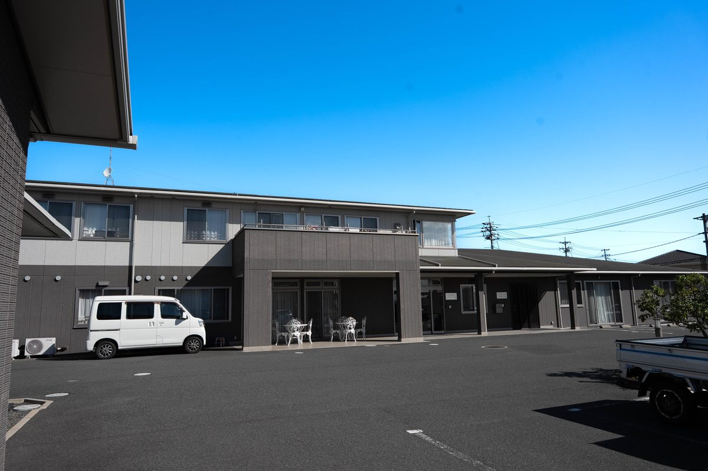
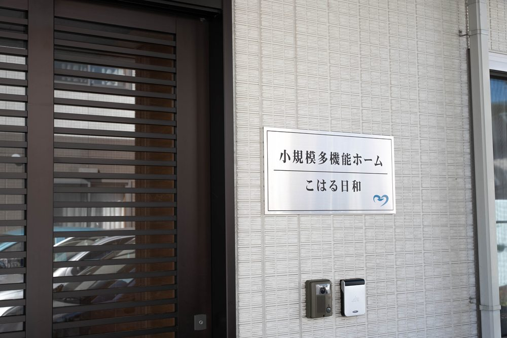

施設のご案内
当法人が倉敷市玉島柏島で運営している介護サービスのご案内です。サービス付き高齢者向け住宅「メディケアビレッジかしわじま」、小規模多機能ホーム・デイサービス・訪問介護「こはる日和」、かしわじま居宅介護支援センター、当院の訪問看護・訪問リハビリテーションを、受け入れられる医療的ケア・送迎範囲・費用の目安とあわせて掲載しています。ご本人・ご家族からのご相談も、ケアマネジャー・医療機関からのご相談もお受けしています。
全10件
いなだ医院と介護施設は、どういう関係ですか？
医院と介護施設の関係、ご用件ごとの連絡先、建物の場所を一覧にしました。
医療的ケア対応胃ろうや在宅酸素があっても、介護サービスを利用できますか？
医療的ケアがあることを理由に、介護サービスをあきらめる必要はありません。受け入れた実績のあるケアを一覧にしました。
高齢者向け住宅メディケアビレッジかしわじまは、どんな住まいですか？
倉敷市玉島柏島にある28戸のサービス付き高齢者向け住宅です。費用の目安と医療連携をご案内します。
小規模多機能小規模多機能ホームこはる日和では、どんなサービスが受けられますか？
通い・泊まり・訪問を組み合わせて使える、倉敷市玉島柏島の小規模多機能ホームです。
デイサービスデイサービスセンターこはる日和では、どんなことができますか？
送迎範囲は倉敷市・浅口市・矢掛町。機械浴と機能訓練に対応した倉敷市玉島柏島のデイサービスです。
訪問介護訪問介護こはる日和は、どこまで来てもらえますか？
倉敷市の玉島・水島地区にうかがう訪問介護です。頼めること・頼めないこともご案内します。
訪問看護・リハいなだ医院の訪問看護は、どこまで来てもらえますか？
倉敷市内にうかがう訪問看護・訪問リハビリです。24時間連絡できる体制をとっています。
居宅介護支援ケアマネジャーはどうやって探せばよいですか？
ケアマネジャーの役割と探し方、費用の考え方を、倉敷市玉島柏島の居宅介護支援センターがご案内します。
費用のご案内介護サービスの費用は、だいたいいくらかかりますか？
自己負担の割合、使える上限、サービスごとの料金のかかり方をわかりやすくご案内します。
見学・ご相談施設の見学や相談は、どこに連絡すればよいですか？
ご相談内容ごとの連絡先と、見学から利用開始までの流れをご案内します。
ほかのカテゴリから探す
お問い合わせ・見学のご案内
メディケアビレッジかしわじま（サービス付き高齢者向け住宅）、こはる日和（小規模多機能型居宅介護・デイサービス・居宅介護支援）についてのご相談です。ご家族さま・ケアマネジャーさま、どちらからでもお気軽にご連絡ください。
| 受付 | 月 | 火 | 水 | 木 | 金 | 土 | 日祝 |
|---|---|---|---|---|---|---|---|
| 9:00〜18:00 電話でのご相談・見学受付 | ● | ● | ● | ● | ● | ● | － |
サービス付き高齢者向け住宅・小規模多機能型居宅介護は24時間体制で職員が対応しています。日曜・祝日のご連絡もお受けしますが、担当者が不在の場合は折り返しのご連絡になることがあります。
見学・空き状況のご相談を承ります
こはる日和 小規模多機能型居宅介護のお問い合わせは 086-522-7811 でも承ります。